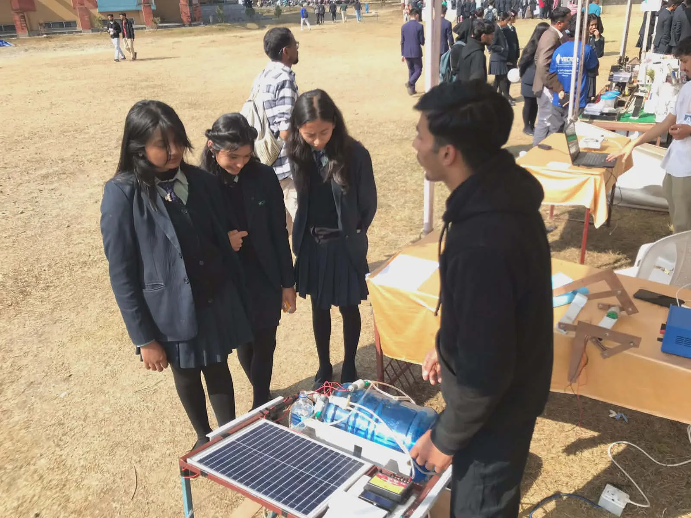

Environmental temperature readings when supplied by a supported source.
CASE 02 / SOFTWARE PLATFORM / FIRE MONITORING
Prometheus X
A private software platform for fire monitoring and environmental data. It is built to organize supported measurements from external data sources into a structured monitoring experience.
PRIVATE PROJECTPROJECT TYPESoftware platform
Monitoring interface and software workflow for supported environmental measurements.
SOFTWARE CONTRIBUTIONInterface + architecture
My contribution is on the software side. The physical sensing hardware is external.
Make environmental data readable.
Prometheus X is a software system for bringing supported environmental measurements into one monitoring experience. The goal is not to decorate raw numbers, but to give them structure: clear states, organized views and a place to understand what the system currently knows.
The project is presented as software. External sensing or data sources can provide measurements; the platform handles the software experience around those inputs.
A small set of signals, one view.
Humidity information presented as part of the environmental view.
Soil moisture readings where the connected source provides them.
Wind information presented through the monitoring interface.
Smoke or air-quality-related readings where supported.
Location information when a supported source provides usable GPS data.
Source → system → monitor.
Supported measurements enter from external sources.
The platform receives and organizes the information.
Information is structured for the monitoring experience.
Charts, maps and data views present what is available.
The interface should tell the truth.
A monitoring interface needs honest states. When live connectivity is unavailable, the product should communicate unavailable, no data or error rather than filling the screen with fabricated telemetry.

Separate what is public from what is protected.
The current access model distinguishes public-safe pages, approved authorized access and administration. Role state belongs to the backend profile and policy rather than local browser flags or URL tricks.
Public pages should avoid private records and unnecessary private-table queries.
Protected monitoring information is available only through the intended authorization flow.
Administrative capabilities remain distinct from authorized-user access.
I build the software layer.
- Interface development
- Frontend implementation
- Project architecture
- Authentication and access experience
- Monitoring and data presentation
- Software workflow and documentation
Don't simulate a system that isn't connected.
The design principle is simple: available data is shown as available; unavailable data is shown as unavailable. The same discipline applies to the case study itself—external hardware stays external, private work stays private and planned functionality is not described as finished.
Private project. In development.
Prometheus X is currently private and is not presented with a public demo or public repository. The next steps belong to continued software implementation and connected-data work where applicable.